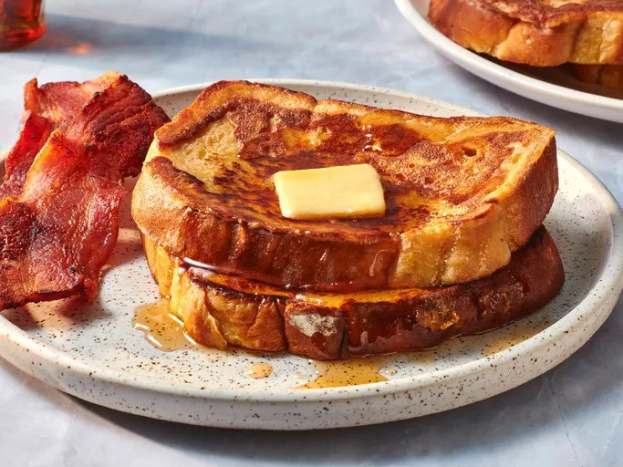

Fluffy French Toast

Description
This fluffy French toast recipe is crisp on the outside, but perfectly soft and tender on the inside. The secret ingredient in this fluffy French toast recipe? All-purpose flour! Flour binds the liquids together, which creates a more traditional batter and helps prevent soggy results.
Ingredients
- 1/4 cup all-purpose flour
- 1 cup milk
- 3 large eggs
- 1 tablespoon white sugar
- 1 teaspoon vanilla extract
- 1/2 teaspoon ground cinnamon
- 1 pinch salt
- 12 thick slices of bread
Steps
- Gather all ingredients.
- Measure flour into a large mixing bowl. Slowly whisk in milk. Whisk in eggs, sugar, vanilla extract, cinnamon, and salt until smooth.
- Heat a lightly oiled griddle or frying pan over medium heat. Meanwhile, soak bread slices in milk mixture until saturated.
- Working in batches, cook bread on the preheated griddle or pan until golden brown on each side.
- Serve hot and enjoy!